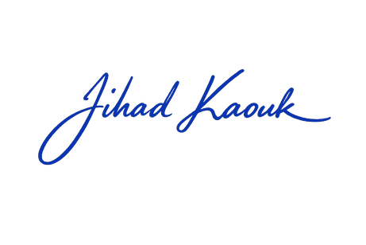
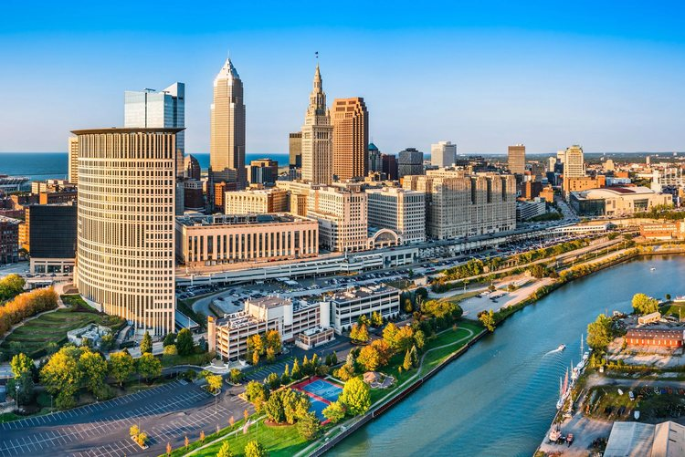
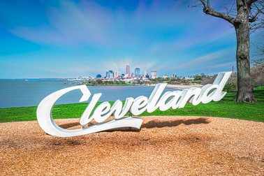
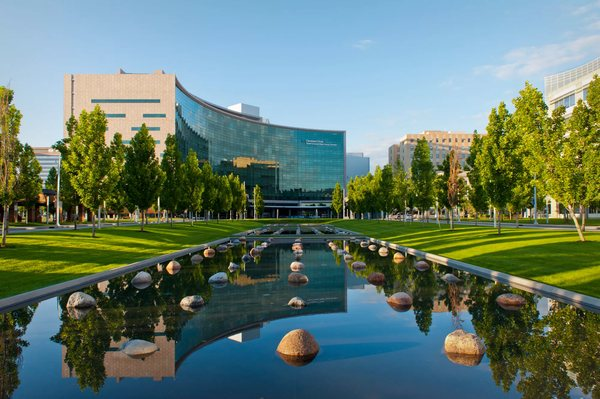

Day 1 · Friday, October 23
Amphitheater B, InterContinental Hotel Cleveland Clinic
Level 3 amphitheater of the InterContinental Hotel & Bank of America Conference Center. Breakfast from 6:30 AM.
Open in Google MapsA two-day course hosted by the Glickman Urological Institute: didactic sessions on Friday, October 23, and a hands-on cadaver lab on Saturday, October 24.
This course brings together the leaders and innovators of single-port surgery from around the country as we share the latest tips and tricks, new indications, and expand on our hands-on practical skill sessions.

Jihad Kaouk, MD, FACS, FRCS (Glasg) Professor & Chair, Glickman Urological Institute · Zegarac-Pollock Endowed Chair in Robotic Surgery · Director, Center for Robotic & Image-Guided Surgery, Cleveland ClinicFriday: didactic sessions in five topic areas. Saturday: hands-on training at the Simulation & Advanced Skills Center. Select a block to go to that session.
Times are Eastern. Program reflects the printed 2026 agenda and may change.


The 2026 lecture will be given by Mani Menon, MD, Chief of Strategy and Innovation in the Department of Urology at Mount Sinai Health, Professor of Urology and Director of Education at the Icahn School of Medicine at Mount Sinai, and Founding Director & Director Emeritus of the Vattikuti Urology Institute.
Faculty and proctors from academic and community programs across the United States and Europe.
Both days take place on Cleveland Clinic's main campus in Cleveland, Ohio.
Level 3 amphitheater of the InterContinental Hotel & Bank of America Conference Center. Breakfast from 6:30 AM.
Open in Google Maps
Cleveland Clinic main campus. Cadaver lab with four SP robot stations; breakfast from 7:00 AM.
Open in Google Maps



Research fellows and education staff supporting the 2026 symposium, Cleveland Clinic.


RSVP is required for the 2026 symposium.